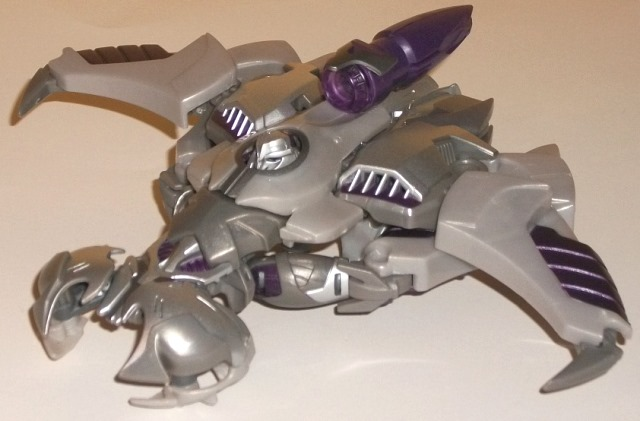
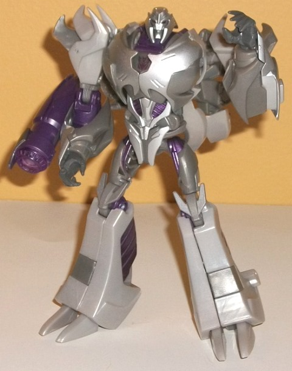
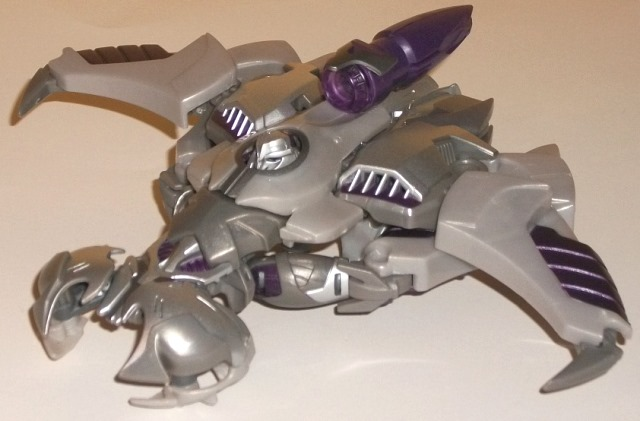
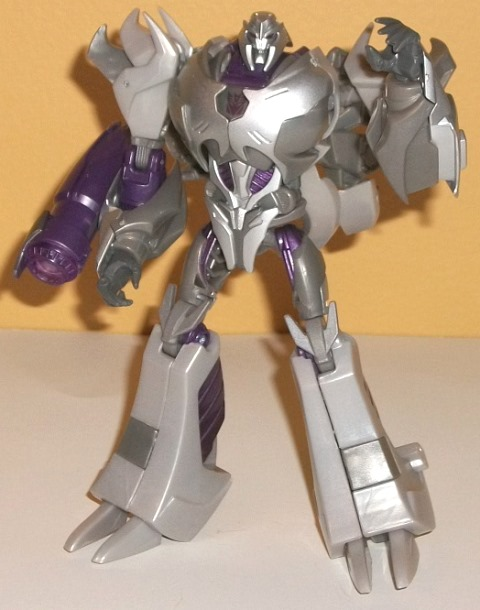
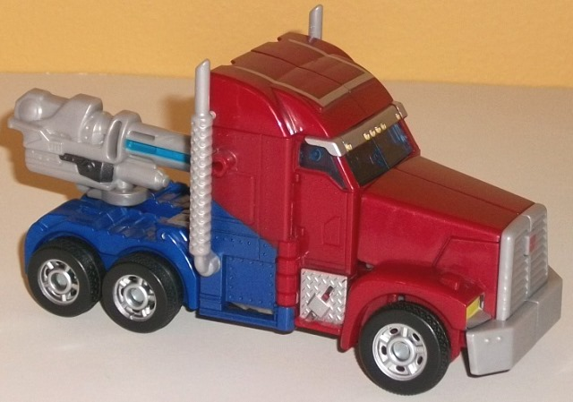
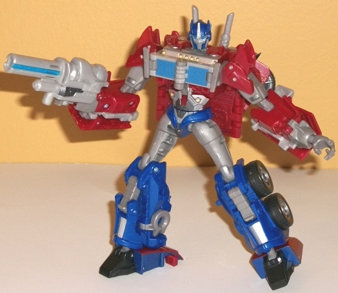
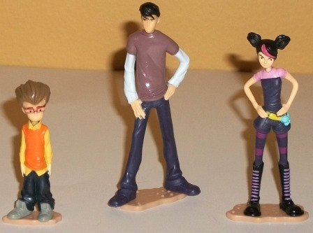

 
Allegiance: Decepticon
Size : Deluxe
Difficulty of Transformation : Medium
Color Scheme : Light milky glittery gray, moderately dark gray, dark metallic purple, silver, and some transparent light purple
Individual Rating : 7.5
Set Price
: $30 (U.S.; comes with
DVD of episode "Masters & Students")
Overall Rating
: 8.2
 Megatron
Megatron


Allegiance:
Decepticon
Size
: Deluxe
Difficulty of Transformation
: Medium
Color Scheme
: Light milky glittery
gray, moderately dark gray, dark metallic purple, silver, and some transparent
light purple
Individual Rating
: 7.5
For Prime, Megatron gets
a new alt mode of a flying... silver... thing. Not unlike his
original
movie self
, but a bit more streamlined. However, it is VERY obvious
that this mold is-- from an engineering perspective-- a bit of an afterthought,
as it doesn't really fit the general shape of any actual aircraft and has
robot extras all over the place. The most egregious is his head, just sticking
up right out of the middle of this mode. There's a slight circular cover,
but all this really does is hide his mouth-- the rest of his head is still
there, in plain view. His legs are also incredibly obvious, the upper legs
sticking out the front sides of the body and angling back, where the large
toes and lower legs point towards the rear end. I suppose if you really
squint, maybe they might look like thrusters, but that is REALLY pushing
it. They're pretty much just unsightly leg kibble hanging off this mode.
I'm also not sure what the... thing... that pokes out the front of this
mode is supposed to be. A cockpit? (If so, why no windows? And it should
be much slimmer.) It's very obviously just his chest pieces rejiggered
a bit, and doesn't look like anything else. It's just... weird. There's
no landing gear, either, and this mode sits somewhat unevenly on a flat
surface due to all that kibble. His arms, however, fold up prety nicely
on the back end, so no complaints there. There's also some genuinely good
bits about this mode-- the wings that curve inwards at the end look very
dyanmic and evil-looking, and as a whole this alt mode has a menacing feeling
to it. Some molded bits like the vents on the top also look neat, and the
way his rear thruster is essentially made from his robot weapon is a pretty
nice idea, even if it's a bit small proportionally on this toy. Megatron's
color scheme is pretty Megatron-- he's almost entirely either light or
moderately dark gray, which is dulllllll. That said, the metallic purple
paint and plastic really pops well on places like his wings and cannon,
which gives him at least a little much-needed color. (Unfortunately, a
good portion of his purple plastic is on the inside of his leg halves,
making it not really visually present in EITHER mode.) Some of his pieces--
like his side vents in this mode, and most of the front...cockpit...thing--
are also painted silver, which always looks much nicer than gray plastic.
His mold detailing is fairly minimal beyond a few places like his front
cockpit thing and parts of his upper legs, but this fits well with the
Prime aesthetic, and his curved lines that end in points fit both Megatron
well, as well as the Prime aesthetic.
Megatron's robot mode,
however... well, THIS is what this toy was made for, no doubt. There's
a bit of back kibble, from the few pieces that belong exclusively to his
vehicle mode, like his partial head-cover piece and his vents-- these are
a bit noticeable visually, but don't restrict articulation as much as you'd
think. Otherwise, Megatron looks like a Megatron should-- evil, powerful,
and sharp. I love all the gnarled spike-like details on his shoulders and
knees, and his toes on each foot fit in well with that look, too. (I'm
not fond of the square pieces of dark gray plastic amidst all the light
gray plastic on his lower legs, though-- it's off, and definitely not show-accurate.)
His chest is made up of panels that are alternatively curved and smooth,
and just look great. His headsculpt is also pretty spot-on compared to
the show model (as is the rest of him in this mode), and the transparent
purple light piping in his eyes works moderately well. I love the modification
Hasbro gave to Megatron's normal "buckethead" look, adding large, wisened
eyebrows, a skull-like mouth, and guards around the sides of his mouth
that look a little like mandibles. Given his utter lack of visible "vehicle
pieces", if it weren't for those couple of pieces behind his back, he wouldn't
even really look like a Transformer, but more of just a giant evil robot.
His wings compress brilliantly into his legs, and as befits a Megatron,
his fusion cannon weapon can plug onto the back of his right hand (as well
as his left-- and if you fold out a peg, he can hold the cannon in either
of his hands, too). For articulation, he can move at the neck, shoulders
(at two points), elbows (at three points), and rotation at the wrists,
as well as movement at the hips, knees (at two points), and slightly at
the ankles. Given how well-balanced this is, this means you can have a
lot of fun putting him in different dynamic poses.
 Optimus
Prime (w/ Jack, Miko, & Raf)
Optimus
Prime (w/ Jack, Miko, & Raf)



Allegiance
: Autobot
Size
: Deluxe
Difficulty of Transformation
: Hard
Color Scheme
: Dark glittery red,
dark blue, light brownish gray, brownish gray, and some silver, charcoal
black, bright yellow, blue, and transparent light blue
Individual Rating
: 8.8 (Giftset
version); 8.6 (SDCC 2011 version)*
Optimus Prime's truck
cab alt mode makes it to deluxe-size very much intact, with no real proportional
problems at all. In fact, in many respects-- such as the proportion of
the middle portion to his nose, or the silver-painted cab tires-- this
figure is actually BETTER in this mode than the
First
Edition voyager
. The back end is just the tiniest bit small, but otherwise
his vehicle mode looks VERY accurate to the show model, here. There's also
no robot extras to speak of-- not even any visible inside his transparent
windows. The usual Prime color scheme also uses interesting shades of both
dark red and dark blue on this figure, both of which have the tiniest tinge
of a metallic tint to them, giving them visual interest even without taking
into consideration the other colors. There is a fair amount of gray plastic
here on the smokestacks, gun (stored near the back end), and front grill--
unfortunately, it's that bland milky gray that doesn't look remotely metallic,
just boring. Fortunately, there is a bit of silver paint in this mode--
besides the aforementioned hubcaps, parts of his sides are painted silver,
as well as the headlight grill above his transparent windows and a rectangular
shape on the top of this mode. His headlights are also a nice, bright yellow
that work well against the silver and red surrounding them. The mold detailing--
as per the Prime series usual-- is fairly sparse due to the styling, but
it's there where it's needed, such as on the rivets on the side of this
mode or even the little headlights above the windows.
This version of "Prime
Prime" transforms almost identically to the First Edition voyager, with
the only major difference being in how exactly the arms unfold-- it's a
bit simpler in that respect, but still a fairly complex transformation.
For the most part, Optimus pulls off this mode quite well-- his proportions
are largely prety good, particularly in the lower body. However, his chest
is a bit overly square, and his shoulders a bit small. None of these by
themselves are particularly noticeable issues, but they are worth noting.
Due to the smaller scale compared to the voyager First Edition toy, there
are a few other sacrifices that had to made-- namely, some more noticeable
kibble pieces, such as ca ouple of vehicle kibble pieces on the front grill
on Prime's elbows-- which look a bit odd but don't really get in the way--
larger heels made from the top of his truck mode, and his back section
that sticks out a bit more, being a square shape behind his rather trim
waist and stomach. His face sculpt-- although decent-- isn't quite as show-accurate
as the First Edition voyager's, with the eyes being a bit larger and the
antennae shorter (likely this is because this mold was released rather
early compared even to the other First Edition toys, so perhaps the fine-tuning
of Prime's show model head hadn't been completed yet). I do love all the
details on his stomach and chest, though, and how the angled vehicle bits
compress together so well on Prime's back while allowing his smokestacks
to angle a bit, per the show model. My biggest beef with Optimus in this
mode are his lower arms-- they're already a bit too long proportinally,
but that little gray extension, in addition to his hands looking a bit
too skeletal-- it just looks weird, particularly since they're different
colors than the rest of his arms. The brownish gray that pokes through
in this mode here and in several other parts-- like Prime's hips and fake
chest-- also just isn't that great a shade of the color, the brown making
it look a tad ugly. For articulation, Optimus can move at the neck, shoulders
(at two points), elbows (at two points), wrists, slightly at the waist
(his square backpack gets in the way of full rotation), and at the hips
(at two points), knees, and ankles (at two points)-- thus, he can pull
off some pretty mean poses. As you'd expect, Prime's gun can be held in
his hands easily in this mode.
As for the minifigures
of the main human figures of the series-- Jack, Miko, and Raf-- there's
not a whole lot to say about them. They're quite accurate, having a lot
of paint to keep them accurate to their show models, but they pretty much
just stand there. Jack and Raf can only rotate their heads, and Miko can't
even do that because of her ponytail. Thus, they're a nice little bonus,
but not something worth picking up the set for by any means.
As a whole, this First Edition giftset has some pretty decent molds, but neither Optimus nor Megatron are large enough size-wise (either compared to the other toys in the line or compared to the human figurines they come with). Both also have had these designs improved upon slightly by the First Edition voyager (in Optimus' case) or by the "Robots in Disguise" voyager (in Megatron's case). The human figurines don't do much and are forgettable, but hey, at least given the price you're basically getting them for free along with a DVD of an episode of the show, so in that respect this set is a pretty nice deal. If you're just a "casual Prime" fan and want a set with nice transformable versions of the leaders (size be darned) and little figurines of the humans, this is a recommended pickup-- otherwise, stick with the larger toys of Optimus and Megatron (or the smaller toys if you're into Cyberverse).
Reviews by Beastbot
*The Optimus Prime toy in this set was released solo in a Matrix of Leadership-shaped case as a San Diego Comic-Con 2011 exclusive. This version of First Edition deluxe Optimus Prime is almost entirely the same as the one reviewed in this giftset, but there are a few minor differences-- namely, on the SDCC 2011 version, the robot mode windows are gray, it doesn't have the silver three-sided rectangle paint app on the top in vehicle mode, and the headlights are silver-- all negative changes, in my opinion, and this is on top of the more expensive price tag for this version of the toy.